Project Status Report — 18 August 2026
~90% complete
Full cable ladder route: outdoor posts → 90° left bend → building approach → wall penetration → internal run → 90° right bend → vertical riser down to MSB
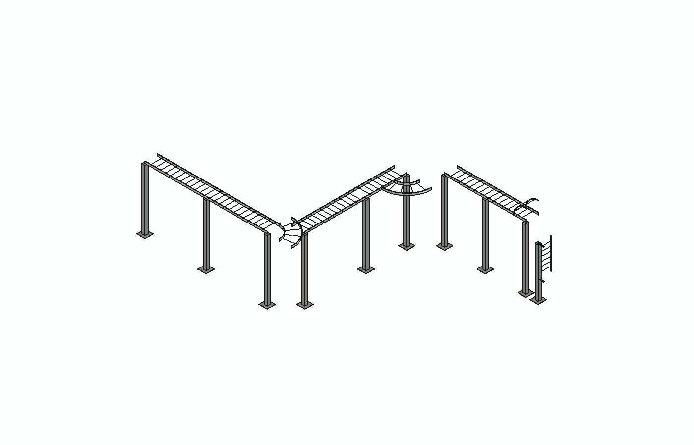
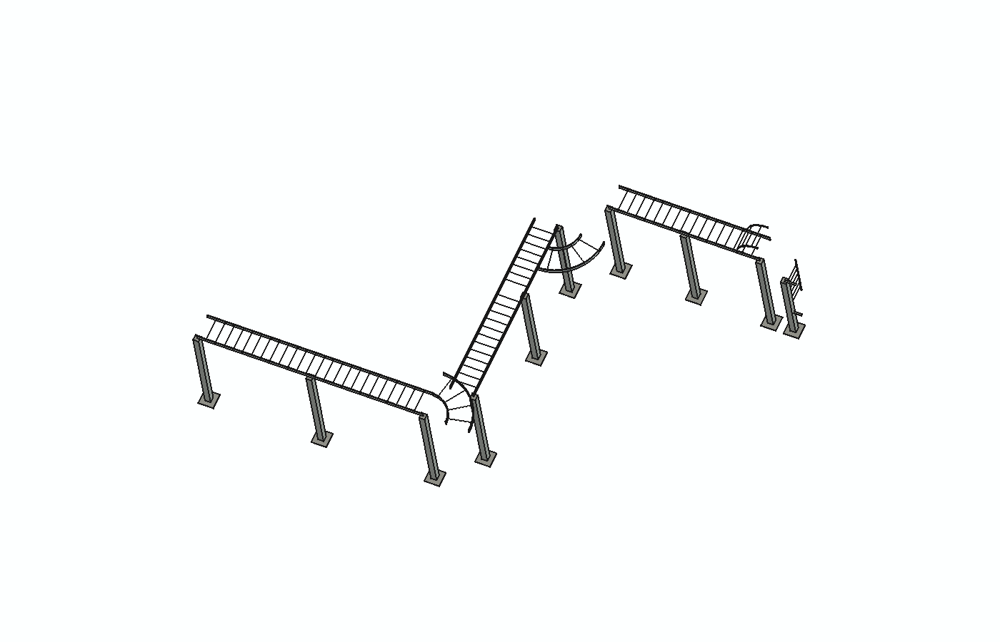
Top View (plan)
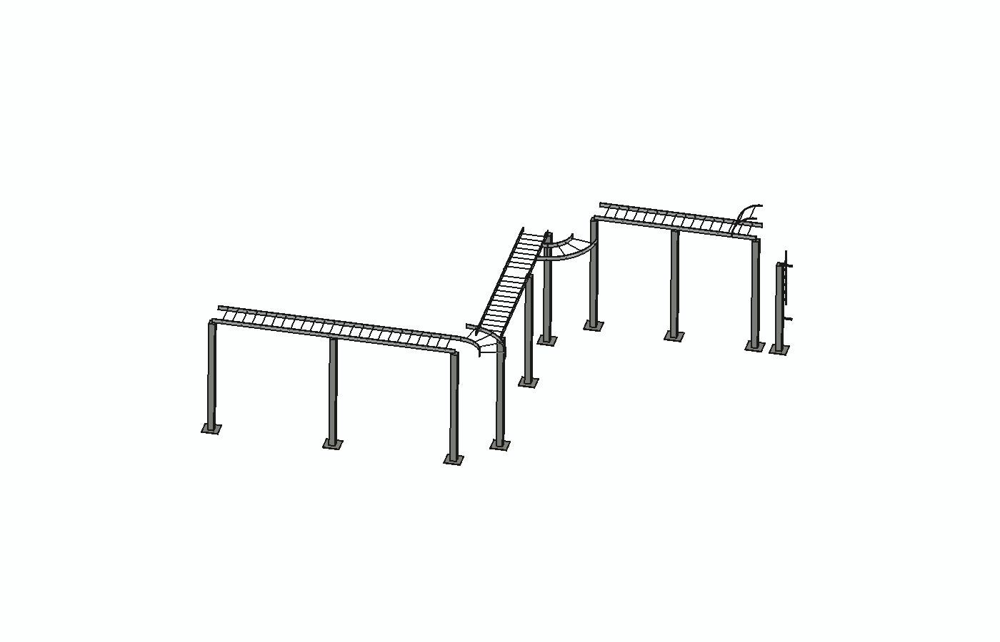
Front View (elevation)
from cable_tray_router import CableTrayRoute, NEMA3_600, Direction, FreeCADBuilder
route = CableTrayRoute("TX1_to_MSB1", cable_load_kg_per_m=30)
route.set_tray(NEMA3_600)
route.start(x=0, y=0, z=3000, direction=Direction.POS_X)
route.straight(6000, notes="Outdoor run on 150x150 posts")
route.horizontal_bend("left", 90)
route.straight(3000, notes="Approaching data hall west wall")
route.penetration("Data Hall West Wall", thickness=200)
route.straight(2000, notes="Internal ceiling run")
route.horizontal_bend("right", 90)
route.straight(4000, notes="Internal run to MSB location")
route.vertical_bend("down", 90)
route.straight_vertical(1500, "down")
route.end()
route.calculate_supports(default_support="POST_150")
route.print_bom() # Bill of materials
route.print_supports() # Support schedule with coordinates
builder = FreeCADBuilder(route)
builder.build() # Generates 3D cable ladder geometry| Total route length | 20.9 m |
| Horizontal bends | 2 (left + right) |
| Vertical risers | 1 (down) |
| Wall penetrations | 1 (fire-rated) |
| Support posts | 18 calculated |
| Tray self-weight | 6.6 kg/m |
| Cable load | 30 kg/m |
| Total load | 36.6 kg/m |
| Support spacing | 3000 mm (auto from load table) |
| Deliverable | File | Status |
|---|---|---|
| Product catalogue & reference index | INDEX.md |
Done |
| Design & installation guidelines | GUIDELINES.md |
Done |
| Cable weight & support spacing data | GUIDELINES.md §9 |
Done |
| Scripted routing system (BOM, supports, penetrations) | cable_tray_router.py |
Done |
| Trapeze bracket STEP files (8 parts) | models/step-files/ |
Done |
| Cable ladder fittings library (8 fittings) | CableLadderFittings.FCStd |
Done |
| FreeCADBuilder — ladder geometry | cable_tray_router.py |
Done |
| Connected route demo (full system) | CableLadder_Route_Demo.FCStd |
Done |
NEMA3 600mm cable ladder — open rungs between side rails, matching Ezystrut catalogue
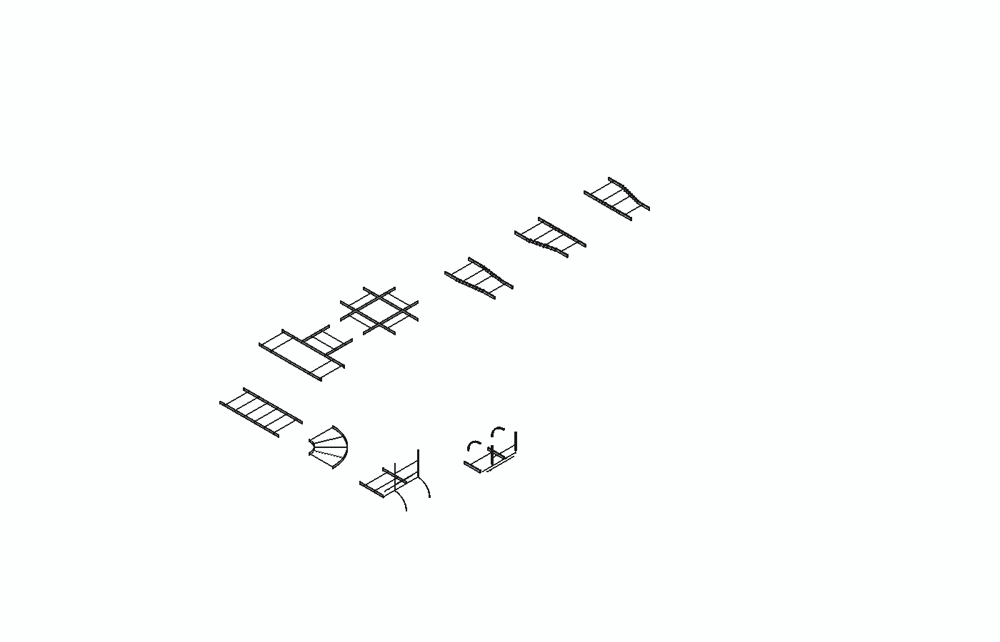
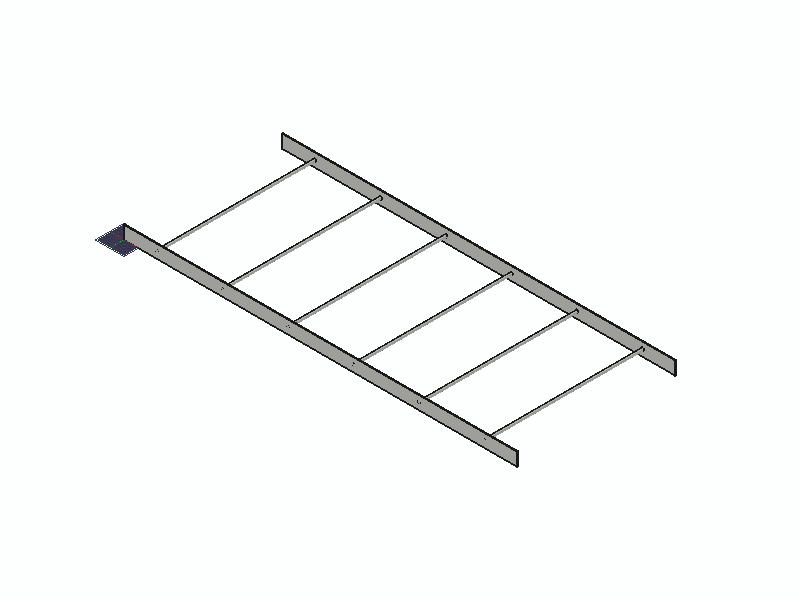
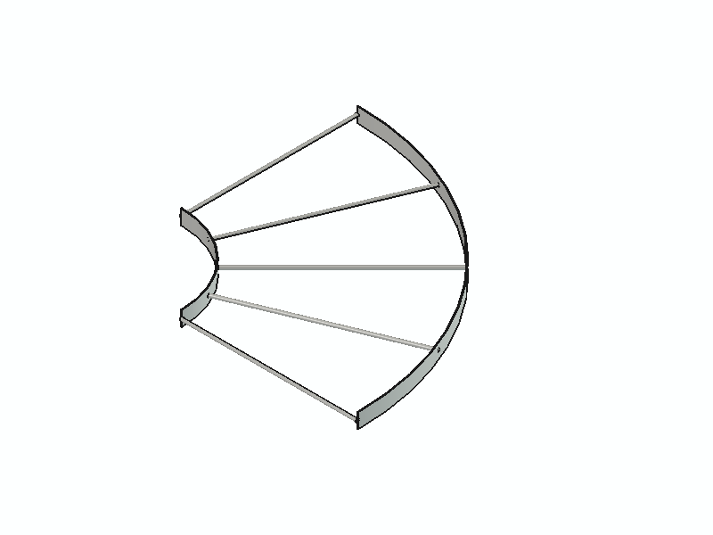
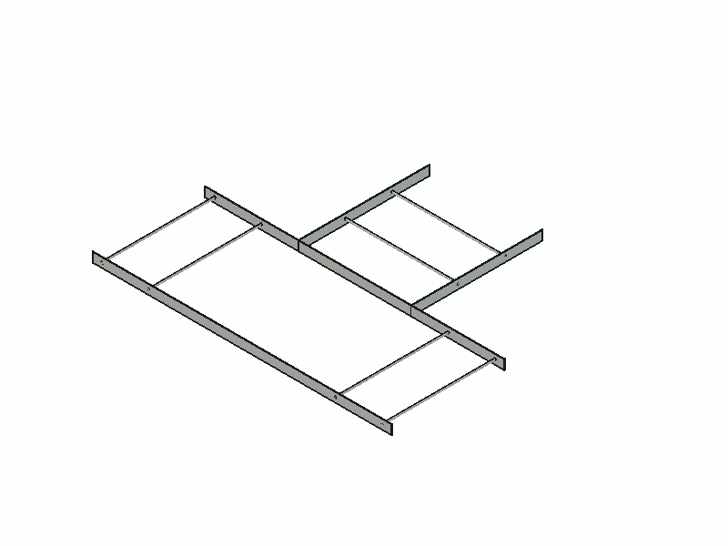
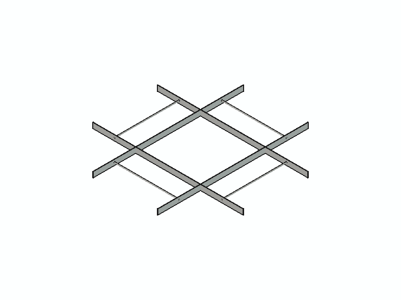
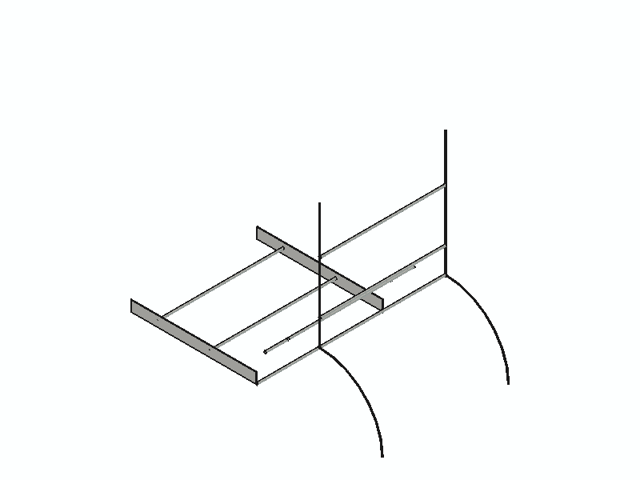
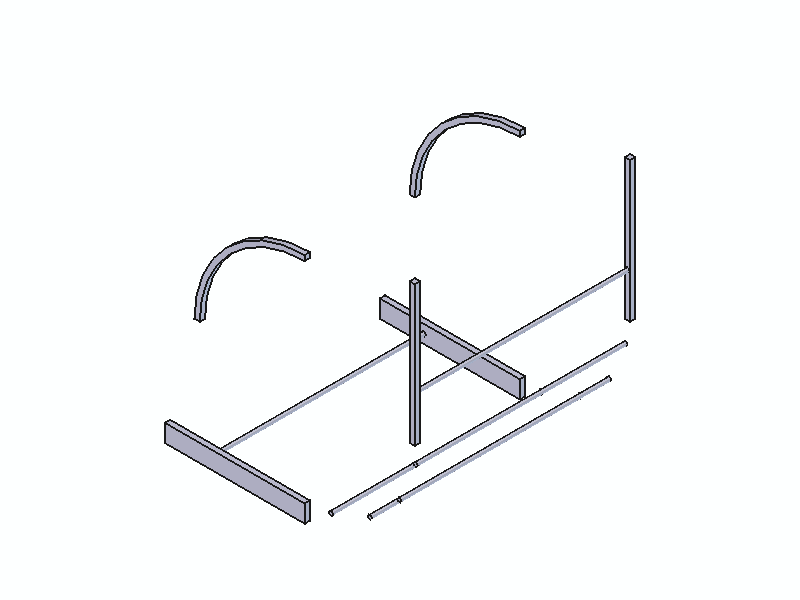
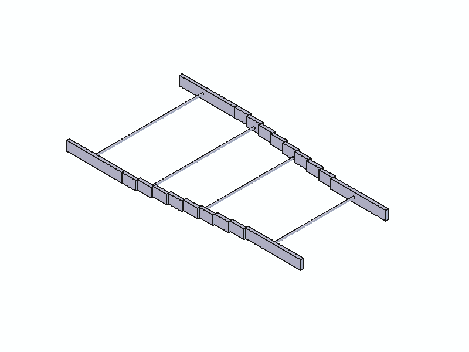
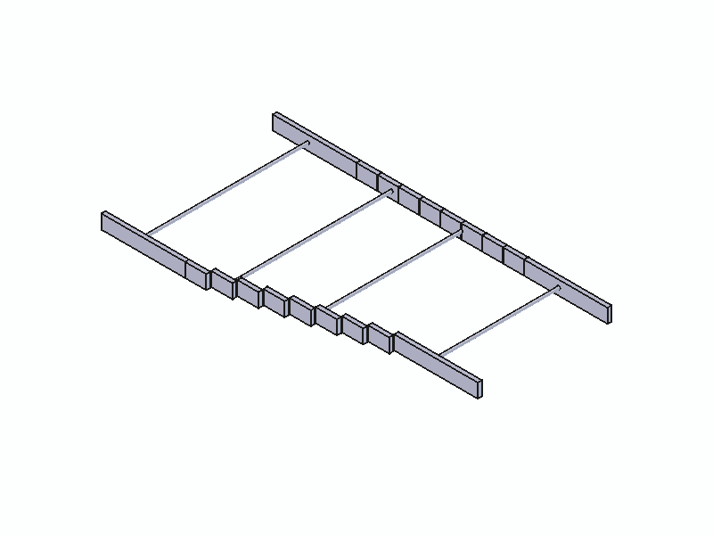
start(x, y, z, direction) | Working |
straight(length) | Working |
horizontal_bend(turn, angle) | Working |
vertical_bend(type, angle) | Working |
straight_vertical(length) | Working |
penetration(wall, thickness) | Working |
over_obstacle(name, clearance) | Working |
under_obstacle(name, clearance) | Working |
tee(branch_direction) | Working |
| Auto support spacing calculation | Working |
| Bill of Materials generation | Working |
| Support schedule with coords | Working |
| Penetration schedule (AS/NZS 3013) | Working |
| Obstacle crossing annotations | Working |
| Route summary printout | Working |
| FreeCAD 3D model (ladder style) | Working |
NEMA3_600 | 600mm NEMA3 ladder (6m lengths) |
NEMA3_900 | 900mm NEMA3 ladder (6m lengths) |
ET5_300 | 300mm ET5 heavy duty (3m) |
ET5_600 | 600mm ET5 heavy duty (3m) |
| Width (between rails) | 600 mm |
| Overall width | 660 mm |
| Rail height | 100 mm |
| Rung diameter | 12 mm |
| Rung spacing | 250 mm |
| Bend radius | 600 mm (inner) |
| Standard length | 6000 mm |
| Self weight | 6.6 kg/m (39.6 kg per 6m) |
| Span | Max Load | Deflection |
|---|---|---|
| 3.0 m | 60 kg/m | 15 mm |
| 2.5 m | 80 kg/m | 12 mm |
| 2.0 m | 120 kg/m | 8 mm |
| 1.5 m | 200 kg/m | 5 mm |
| AS/NZS 3000 | Wiring Rules cl. 3.9.5 |
| AS/NZS 3013 | Fire-rated penetrations |
| AS1397 / AS/NZS4680 | Galvanised finishes |
cable-tray-ezystrut/
INDEX.md Product catalogue
GUIDELINES.md Design & installation guidelines
cable_tray_router.py Scripted routing system
STATUS.html This report
datasheets/
Cable-Tray-and-Accessories-DataSheet.pdf
CT-Cable-Tray-DataSheet.pdf
Cantilevers-and-Trapezes-DataSheet.pdf
models/
CableLadderFittings.FCStd 8 ladder fittings library
CableLadder_Route_Demo.FCStd Connected route (26 objects)
CableTrayRoute_Example.FCStd Legacy U-channel route
step-files/
TB-E4000S/ (4 STEP files) E4000 slotted trapeze brackets
TB-Standard/ (4 STEP files) Standard trapeze brackets
status-screenshots/ (13 PNGs) Rendered images for this reportGenerated by Claude Code — 18 Aug 2026 — cable-tray-ezystrut